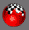

gmax : Les matériaux et le mapping
1 - Les bases
2 - Le gestionnaire de matériaux
3 - Appliquer des matériaux dans gmax
Ce paragraphe traite des matériaux tels qu'ils sont créés et manipulés par gmax pour réaliser des modèles pour Microsoft Train Simulator. Quelques différences peuvent se présenter pour d'autres modeleurs et d'autres jeux, mais le principe reste globalement le même.
1.1 - Les matériaux
Un matériau, c'est non seulement une texture mais aussi différents paramètres qui lui sont liés :
- le Shader : propriétés et comportement du matériau lors de l'affichage (application d'une couleur diffuse, d'une texture, d'une couche alpha...)
- le "Light Material" : le comportement lumineux (réflexion, brillance, auto-luminescence, transparence)
- le mode de filtrage de la texture
- le fonctionnement du Z-Buffer (tableau utilisé pour trier les pixels en fonction de leur profondeur par rapport à l'écran)
- le fonctionnement de la couche alpha (transparence tout ou rien, ou niveau de gris)
1.2 - L'application d'un matériau à un objet
Chaque objet 3D se voit attribuer un seul et unique matériau. Chaque facette de l'objet possède un material ID. Ainsi, si le matériau est multiple, chaque facette sera habillée avec le sous-matériau qui correspond à son material ID.
1.3 - Le placage de texture (Mapping)
Comment est appliquée une texture sur un objet? Pour faire simple, il faut savoir que chaque vertex possédent 5 coordonnées. X, Y, Z sont les trois coordonnées spatiales du point. U, V sont des coordonnées planes sur la texture. Lors de l'affichage d'un polygone à l'écran, l'ordinateur calcule la position des trois sommets par rapport à la caméra. Puis il découpe un triangle dans la texture, le déforme et le dessine sur l'écran à la position des trois sommets.
2.1 - Gestionnaire du gamepack Microsoft 
Le gestionnaire de matériaux fait partie du gamepack de Microsoft. C'est donc un module spécifique à MSTS qui prend la place du gestionnaire original fourni avec gmax. Il gère des matériaux spécifiquement adaptés à MSTS. Les textures acceptées sont uniquement des *.ace non compressées ou compressés en zlib. gmax ne sait pas lire les textures compressés au format DXT1. (Nota : on peut créer des matériaux avec des fichiers *.bmp ou *.tga, mais le LOD Manager refusera de compiler le modèle)
2.2 - Les Shaders
Parmis les shaders proposés, deux sont particulièrement utiles : TexDiff pour les matériaux opaques, BlendATexDiff pour les matériaux transparents ou translucides.
2.3 - La Lighting Palette
Ce sont les différents comportements lumineux supportés par MSTS.
OptSpecular0 : affichage standard
OptSpecular750 : matériau légèrement brillant
OptSpecular25 : matériau très brillant
OptHalfbright : matériau faiblement auto-luminescent
OptFullbright : matériau fortement auto-luminescent
DarkShade : matériau sombre. réagit peu à la lumière ambiante
Cruciform et CruciformLong : ces deux modes sont insensibles à l'ombrage de Gouraud. Ils sont utilisés pour faire des arbres avec
deux rectangles qui se croisent sans présenter des reflets de couleurs différentes.
2.4 - Filter Mode
Laisser sur MipLinear
2.5 - Z-Buffer Mode
Laisser sur Normal
2.6 - Alpha Test Mode
Sans effet sur un matériau opaque
Si le shader est BlendATexDiff, None donnera des semi-transparences, Trans donnera du tout ou rien.
Nota : les facettes traitées en semi-transparence devront être triées. En raison du fonctionnement du Z-buffer, elles doivent être dessinées après les autres sinon, on risque de voir disparaitre la géométrie
qui devrait apparaitre derrière grâce à la transparence. En revanche, pour les facettes "Trans", les pixels totalement transparents n'affectent pas le Z-buffer et l'arrière plan est correctement dessiné.
2.7 - Mip LOD Bias
C'est une petite fonction spécifique de MSTS pour contourner un problème d'affichage avec le Mip mapping.
Rappel sur le Mip Mapping :
Lorsqu'un objet s'éloigne de l'écran, ses facettes deviennent petites et l'application des textures, malgré le filtrage, fait apparaître des défauts de Moiré (effets d'escaliers,
pâtés de pixels...). Le Mip Mapping consiste à décliner une texture en plusieurs tailles différentes.
Lors de la conversion d'une image 512*512 BMP en ACE, La texture finale comportera des versions 512*512, 256*256, 128*128...etc intégrées dans le même fichier. L'image adéquate sera utilisée en
fonction de l'éloignement de l'objet. Un intérêt secondaire à cette technique est d'utiliser des textures plus petites pour les objets d'arrière plan et soulager ainsi la carte graphique. (Nota : Les textures
ACE 1024*1024 générées avec l'utilitaire MakeAceWin n'ont pas de Mip mapping).
MSTS affiche souvent trop tôt les niveaux de Mip Mapping moins détaillés. Ce qui est assez laid. Le Mip LOD Bias permet de retarder cet effet. On utilise en général la valeur -3.0 pour avoir un rendu correct.
3 - Appliquer des matériaux dans gmax
Entrons maintenant dans la phase pratique. Nous avons un objet 3D quelconque à texturer et un matériau.
3.1 - Edit Mesh (facultatif)
On peut appliquer directement une texture sur un objet. Mais, bien souvent, il est préférable de sélectionner des sous-ensembles de l'objet parce qu'elles ne recevront pas le même matériau ou celui-ci sera appliqué fort différemment. Le modificateur Edit Mesh est alors nécessaire. Il permet de sélectionner une ou plusieurs facettes et travailler dessus sans perturber le reste de l'objet.

3.2 - UVW Map
Pour représenter un nuage de points 3D dans l'espace plan d'une texture, il faut à un moment ou un autre réaliser une projection. C'est
le modificateur UVW Map qui s'en charge. Il crée les coordonnées de Mapping de l'objet
(Nota : Pour les formes de base, des coordonnées par défaut peuvent être créées en même temps que la primitive).
Détaillons un peu les paramètres utiles pour créer des add-ons pour MSTS.
Dans la section Mapping, UVW Map propose plusieurs modes de projection différents. L'espace de la texture est représenté par un
objet orange qu'on appelle le Gizmo.
U Tile et V Tile servent à répéter plusieurs fois la texture dans le Gizmo dans le sens de la largeur ou de la longueur.
La Case Flip sert à retourner la texture selon chaque axe. Cependant on verra qu'il est plus facile d'adapter le mapping sur notre objet en utilisant
le modificateur Unwrap UVW décrit au paragraphe suivant.
- Projection plane
C'est sûrement la plus utilisée. Dans la section alignment, le Gizmo peut être facilement orienté selon sur les axes X, Y ou Z.
Très utile également, la touche Bitmap Fit vous demande de sélectionner une image sur le disque dur. Elle va forcer la proportion
entre la longueur et la largeur du Gizmo. Dans le cas de MSTS, on s'assurera ainsi que le Gizmo sera carré et que les textures ne seront pas étirées
dans une direction.
- Projection cylindrique
La texture s'enroule autour d'un axe
- Projection sphérique
La texture est projetée suivant un sphère. Ce mode entraine évidemment de fortes distortions.
- Projection "Boite"
Comparable à la projection plane mais suivant 6 directions en même temps.
- Projection face
Il n'y pas de Gizmo pour représenter cette projection. Chaque polygone est étiré sur la texture toute entière.
Il est possible, dans la pile des modificateurs de sélectionner le sous-objet Gizmo. On peut alors lui faire subir des translations, rotations ou changements d'échelle.
3.3 - Unwarp UVW (Dépliage UVW)
Le modificateur Unwrap UVW permet d'affiner les coordonnées de mapping d'un objet.
Dans le menu des paramètres, seul le bouton Edit est utile. Il ouvre une fenêtre dans laquelle nous allons travailler.
Nous voyons alors chaque point de notre objet et la texture du matériau. Dans l'exemple ci-dessus, c'est une projection plane qui a été choisie.
Voyons les fonctions utiles dans cette fenêtre d'édition, de gauche à droite, de haut en bas.
Il est possible de sélectionner des points et les translater. On peut bloquer les translations horizontalement ou verticalement.
 Il est possible de sélectionner des points et changer leur échelle. On peut bloquer l'homothétie horizontalement ou verticalement.
Il est possible de sélectionner des points et changer leur échelle. On peut bloquer l'homothétie horizontalement ou verticalement.
Il est possible de sélectionner des points et d'en faire une symétrie. On peut faire des symétrie horizontales ou verticales.
Dans le cas d'un Multi-matériau, cette boite permet de sélectionner les différentes textures ou même d'aller en chercher une autre sur le disque dur.
Il est possible de définir très précisement les coordonnées de mapping d'un point.
On travail dans un repère UV, les coordonnées W n'ont donc pas d'utilité dans notre cas. Le point de coordonnées (0, 0) se trouve
au coin en bas à gauche de la texture. Le point de coordonnées (1, 1) se trouve au coin en haut à droite. Il est possible de donner
des coordonnées inférieures à zéro ou supérieure à 1. La texture se répète à l'infini dans toutes les directions.
Dans le cas d'un Multi-matériau, cette boite permet de filtrer les polygones en fonction de leur Material ID. Lorqu'il y a de nombreux sous-matériaux, l'affichage serait rapidement embrouillant.
Ce sont les fonctions habituelles qui permettent de se déplacer ou zoomer dans la fenêtre.
Pixel Snap. Quand ce bouton est actif, le déplacement des points sur la textures force leur calage précis sur un pixel de la texture.
Par défaut, les lignes et points apparaissent en blanc, les points sélectionnés en rouge. Afin d'améliorer la visibilité, si la texture de fond est blanche par exemple, il est possible de modifier ces couleurs dans la fenêtre des options en cliquant sur le carré de couleur. Ici, le blanc est remplacé par du bleu.
3.4 - Conclusion et résumé
Lorsque je souhaite appliquer une texture sur une partie d'un objet, j'utilise un modificateur Edit Mesh, je sélectionne les polygones sur lesquels je veux travailler, je crée un nouveau matériau si celui-ci n'existe pas déjà ou, dans le cas contraire, j'affecte un Material ID pour les polygones sélectionnés.
J'applique un modificateur UVW Map pour projeter le matériau sur mes polygones.
J'applique un modificateur Unwrap UVW pour editer le mapping et coller finement ma texture sur les polygones.